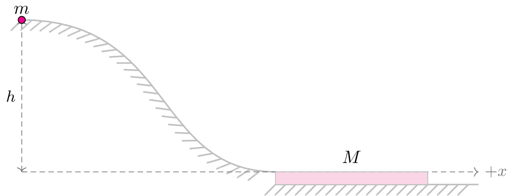

pre.tex
\documentclass[tikz]{standalone}\input{pre.tex}\begin{document}\begin{tikzpicture}[
force/.style={>=latex,draw=blue,fill=blue},
% axis/.style={densely dashed,gray,font=\small},
axis/.style={densely dashed,black!60,font=\small},
interface/.style={
pattern = north east lines,
draw = none,
pattern color=gray!60,
},
cargo/.style={
rectangle,
fill=magenta!40,
draw=black!50,
inner sep=2.5mm,
},
spring/.style={
decoration={
aspect=0.3,
segment length=.8mm,
amplitude=2mm,
coil},
decorate,
draw=magenta!25
},
interface1/.style={draw=gray!60,
% The border decoration is a path replacing decorator.
% For the interface style we want to draw the original path.
% The postaction option is therefore used to ensure that the
% border decoration is drawn *after* the original path.
postaction={draw=gray!60,decorate,decoration={border,angle=-135,
amplitude=0.3cm,segment length=2mm}}},
]
\def\angle{41}
%%%%%%%%%%%%%%%%%%%%%%%%%%%%%%%%%%%%%%
\draw[thick, interface1] (5,-0.25) -- ++(4,0);
% \draw[thick,] (5,0) arc (-90:270:1.5cm);
\draw[thick, interface1] (0,3) coordinate (a) .. controls (3,3) and (2.6,0) .. (5,0);
\draw[axis,<->] (0,0) -- node[left,black] {$h$} (a);
% \draw[axis,<->] (7,0) -- ++(0,1.5);
\draw[axis,->] (0,0) -- ++(9,0) node[right] {$+x$};
\draw[draw=black!30, fill=magenta!20] (5,0) rectangle node[above, yshift=0.5em] {$M$} ++(3,-0.25);
\draw[fill=magenta] (0,3) circle (2pt) node [above]{$m$};
\end{tikzpicture}\end{document}